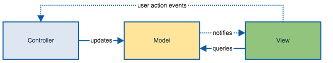
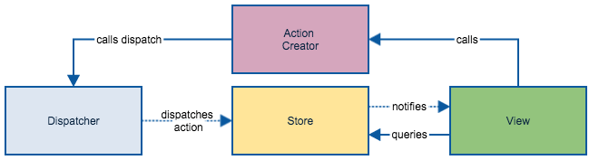

GraphQL — новый Redux
Алексей Золотых
2017 году более 60% людей в мире получили сообщения через платформу INFOBIP
GraphQL — новый Redux
План
- Управление состоянием
- Быстрый старт
- Оптимистические обновления
- Практическое удобство
- Генерация типов
- Проблемы
Redux
A predictable state container for JavaScript apps
GraphQL
GraphQL is a query language for APIs and a runtime for fulfilling those queries with your existing data
1. Управление состоянием
index.js
import React from 'react'
import ReactDOM from 'react-dom'
import { createStore } from 'redux'
import Counter from './components/Counter'
import counter from './reducers'
const store = createStore(counter)
const rootEl = document.getElementById('root')
const render = () => ReactDOM.render(
<Counter
value={store.getState()}
onIncrement={() => store.dispatch({ type: 'INCREMENT' })}
onDecrement={() => store.dispatch({ type: 'DECREMENT' })}
/>,
rootEl
)
render()
store.subscribe(render)
reducers.js
export default (state = 0, action) => {
switch (action.type) {
case 'INCREMENT':
return state + 1
case 'DECREMENT':
return state - 1
default:
return state
}
}
Counter.js
import React, { Component } from 'react'
import PropTypes from 'prop-types'
class Counter extends Component {
constructor(props) {
super(props);
this.incrementAsync = this.incrementAsync.bind(this);
this.incrementIfOdd = this.incrementIfOdd.bind(this);
}
incrementIfOdd() {
if (this.props.value % 2 !== 0) {
this.props.onIncrement()
}
}
incrementAsync() {
setTimeout(this.props.onIncrement, 1000)
}
render() {
const { value, onIncrement, onDecrement } = this.props
return (
<p>
Clicked: {value} times
{' '}
<button onClick={onIncrement}>
+
</button>
{' '}
<button onClick={onDecrement}>
-
</button>
</p>
)
}
}
Counter.propTypes = {
value: PropTypes.number.isRequired,
onIncrement: PropTypes.func.isRequired,
onDecrement: PropTypes.func.isRequired
}
export default Counter
index.js
const container = document.getElementById('container');
let value = 0;
document.querySelector('...')
.addEventListener('click', () => container.innerHTML = ++value);
document.querySelector('...')
.addEventListener('click', () => container.innerHTML = --value);
Примеры из реальной жизни

Такой стиль не пройдет
const container = document.getElementById('container');
let value = 0;
document.querySelector('...')
.addEventListener('click', () => container.innerHTML = ++value);
document.querySelector('...')
.addEventListener('click', () => container.innerHTML = --value);
Такой стиль не пройдет
const container = document.getElementById('container');
let value = 0;
document.querySelector('...')
.addEventListener('click', () => container.innerHTML = ++value);
document.querySelector('...')
.addEventListener('click', () => container.innerHTML = --value);
Если бы мы писали приложение в 2010
бизнес-логика
vs
логика-отображения
MV*
Модели


MV*

FLUX
FLUX


Product manager
Человек, который ломает нормальные астракции о неадекватные требования клиентов


Redux
JS
connect(mapStateToProps, mapDispatchToProps)(Component);
Typescript
interface OwnProps {}
interface StateProps {}
interface DispatchProps {}
type Props = StateProps & DispatchProps & OwnProps
interface State {}
class MyComponent extends React.Component<Props, State> {
...
}
function mapStateToProps(state: MyReduxState, ownProps: OwnProps): StateProps {
...
}
function mapDispatchToProps(dispatch: Redux.Dispatch<any>, ownProps: OwnProps): DispatchProps {
...
}
export default connect<StateProps, DispatchProps, OwnProps>
(mapStateToProps, mapDispatchToProps)(MyComponent)
{
name,
dependencies: dependencies
.mapToArray("name")
.map(::self)
[name in #.name or dependencies]
}
Запрос к дереву
const query = gql`query TaskList {
tasks(limit: 10, offset: 0) {
id
title
users(limit: 10, offset: 0){
name
}
subtasks(limit: 10, offset: 0){
title
}
}
}`;
Все остальное можно получить из схемы
2. Быстрый старт

1. GET /task/1
2. GET /task/1/subtasks
3. GET /task/1/comments
4. GET /get-folder-tree

Что нужно получить c сервера?

Ваш бекенд разработчик

BFF
Backend For Frontend
SSR
server side rendering
vk.com

amazon.com
Все еще
GraphQL

3. Оптимистичные обновления


Решение — Мутация
const mutation = gql`mutation UpdateTask($id: ID, $title: String){
updateTask(id: $id, title: $title) {
id
title
}
}`
В браузере кэш - плоский список
{
"task1": {title: 'Захватить мир'},
"task2": {title: 'task 1'},
"user1": {name: 'user 1'},
"user2": {name: 'user 2'},
}
В браузере
{
"task1": {title: 'Захватить мир'},
"task2": {title: 'task 1'},
"user1": {name: 'user 1'},
"user2": {name: 'user 2'},
}
В браузере
{
"task1": {title: 'Новый заголовок'},
"task2": {title: 'task 1'},
"user1": {name: 'user 1'},
"user2": {name: 'user 2'},
}
4. Практическое удобство
const client = new ApolloClient({ uri: '...'});
const WrappedApp = (
<ApolloProvider client={client}>
<App />
</ApolloProvider>
);
import { graphql } from 'react-apollo';
import gql from 'graphql-tag';
const query = gql`...`;
export const wrapper = graphql(query, {...});
const Component = wrapper(Component);
Фрагменты
fragment NameParts on Person {
firstName
lastName
}
query GetPerson {
people(id: "7") {
...NameParts
avatar(size: LARGE)
}
}
export const wrapper = graphql(GetPerson, {...});
5. Кодогенерация
6. Недостатки
- Набили мало шишек
- Сложность входа
Что не так с GraphQL
habr.com/ru/post/425041/Выводы
- Управление состоянием
- Быстрый старт
- Оптимистические обновления
- Практическое удобство
- Генерация типов
- Проблемы
Спасибо, вопросы!
twitter - @zolotyh